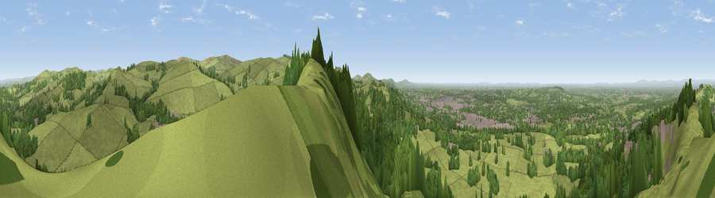

Viewpoint near Bollington
#6132 in England · top 5% of its area beats it · near Bollington · path 70 mWhere it is
The exact computed spot (SJ 94175 76112). Click the marker for map links.
Public access: the nearest public right of way is about 70 m away — the final stretch may cross private land. Computed from Natural England's CRoW access layer and OpenStreetMap rights of way — not the legal definitive map. Always verify locally.
The view, rendered

A 360° render of this exact spot computed from the terrain model, tree cover and land cover — summer colours, afternoon light, calibrated against photographs of famous viewpoints. Real trees, hedges and buildings will differ in detail.
The panorama
Grey silhouette: terrain skyline in each direction (720 bearings, Earth curvature and refraction included). Dashed green: skyline with trees (+15 m) and buildings (+8 m) as obstacles. Blue strip: how far the ground is visible on each bearing.
Where the view opens
Wedge length = distance to the farthest visible ground on that bearing (vegetation-aware). Rings at 10, 25 and 50 km.
What fills the view
63% grassland · 30% woodland · 6% built-up
Angular shares of the visible panorama (visual magnitude), not map area. Landscape diversity 0.37 (0–1 Shannon).
Key numbers
More beautiful places nearby
The staircase of upgrades: each row has a higher view potential than everything closer. Driving times are estimates from straight-line distance, calibrated against real road routing — check an actual route before setting out.
| Place | Direction | Drive | Score |
|---|---|---|---|
| Viewpoint near Bollington | NNW · 1 km | ~3 min | 69.7 |
| Viewpoint near Langley | SSE · 3 km | ~8 min | 71.6 |
| Cats Tor | E · 5 km | ~12 min | 72.8 |
| Viewpoint near Timbersbrook | SSW · 13 km | ~24 min | 74.4 |
| Viewpoint near Mow Cop | SSW · 20 km | ~34 min | 78.9 |
| Viewpoint near Mow Cop | SSW · 21 km | ~35 min | 80.2 |
| White Brow | NW · 46 km | ~66 min | 82.9 |
| Viewpoint near Little Wenlock | SSW · 74 km | ~98 min | 84.2 |
53.28195, -2.08883 · source: screening · position refined by local search. Computed location — check access rights before visiting.